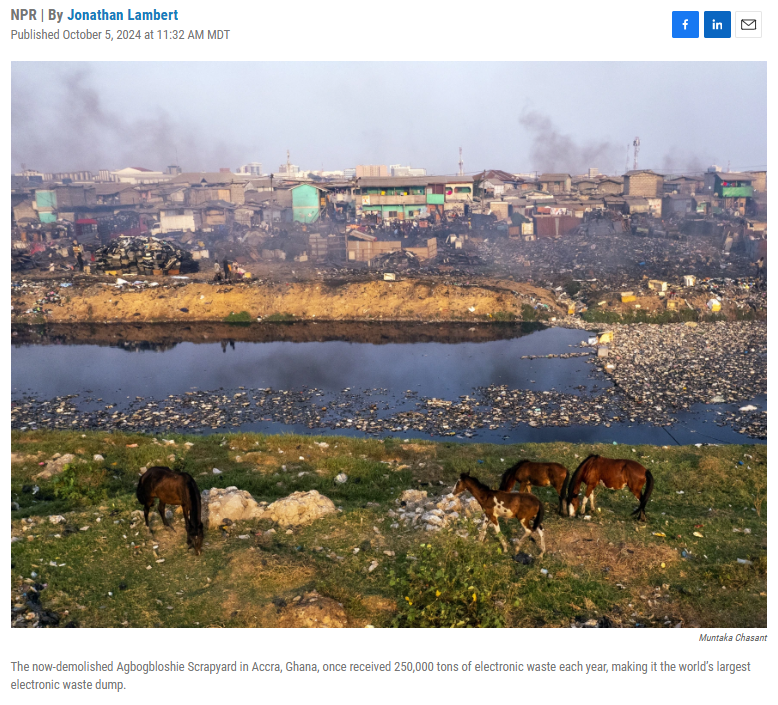
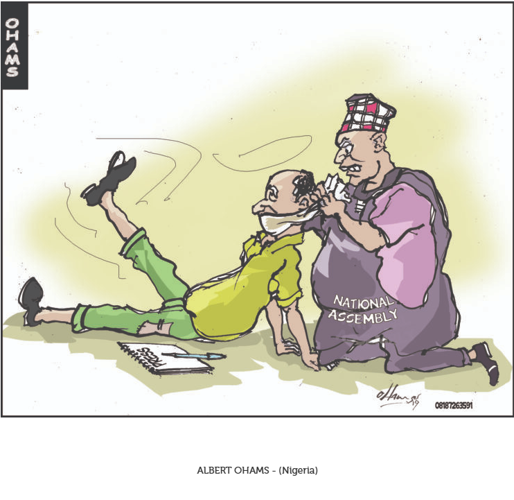

El Sustrato Material: Cobalto en la RDC y Ciclo Tóxico en Ghana
Esta sección analiza los dos extremos físicos de la cadena tecnológica global. En primer lugar, la dependencia de las energías limpias respecto al cobalto congoleño; en segundo lugar, el traslado de residuos electrónicos hacia África occidental bajo vacíos normativos internacionales. Utilice los controles interactivos para alternar las métricas de extracción y explorar las fases del ciclo de residuos en Agbogbloshie.
Geopolítica del Cobalto (R.D. Congo)
La República Democrática del Congo produce 230.000 toneladas métricas de cobalto, concentrando el 74,2% del suministro minero mundial indispensable para baterías y electrónica [Cita 1, 5].
El Ciclo Tóxico del E-Waste en Agbogbloshie, Ghana
Seleccione cada etapa del flujo transfronterizo para examinar cómo la obsolescencia programada del Norte Global evade el Convenio de Basilea e impacta la salud pública africana [Cita 3, 8, 9].

Obsolescencia Programada y Descarte Masivo
En 2022, la economía global generó 62 millones de toneladas de desechos electrónicos (e-waste). En el extremo opuesto del ciclo de consumo mineral, África recibe las externalidades negativas de dispositivos descartados prematuramente en las economías industrializadas.
Colonialismo Digital y el Costo Financiero de los Estereotipos
La dominación territorial histórica ha evolucionado hacia el control de redes submarinas, centros de datos y algoritmos. En esta sección puede comparar estadísticamente el sesgo mediático internacional y analizar cómo la arquitectura digital extractiva penaliza financieramente a las economías africanas.
Asimetría en Cobertura Mediática Electoral
Durante periodos electorales, el 88% de las noticias globales sobre Kenia adoptaron un tono negativo, frente a solo un 48% para economías asiáticas con un perfil de riesgo político idéntico [Cita 17, 18].
Dependencia de Cables Submarinos y Redes
Entre el 85% y el 95% del tráfico internacional de internet en África transita por infraestructuras controladas por capitales extranjeros. Esto consolida un modelo donde las corporaciones extraen datos conductuales locales como materia prima gratuita para entrenar algoritmos foráneos, marginando las lenguas y contextos nativos [Cita 4, 13].
Sobrecosto en Intereses de Deuda Soberana
Los algoritmos y medios internacionales priorizan narrativas de crisis, conflicto y pobreza [Cita 14, 15]. Este encuadre sostenido eleva artificialmente la percepción de riesgo financiero, imponiendo a los países africanos un sobrecosto cuantificado en 4.200 millones de dólares anuales en intereses de deuda soberana [Cita 2, 16].
Análisis Sociopolítico: Sátira Crítica y Asimetría de Poder
La caricatura política africana contemporánea —ejemplificada en la obra de Albert Ohams (Nigeria)— opera como un dispositivo crítico para visibilizar las contradicciones ocultas tras el discurso de la integración global. Examine la pieza gráfica seleccionada y revise la justificación ética y política completa.

Deconstrucción de la Hipocresía Globalizada
La caricatura política africana contemporánea funciona como un mecanismo discursivo esencial para denunciar la represión y las asimetrías de poder [Cita 19, 20]. Esta pieza gráfica ilustra a la perfección la hipocresía de una globalización desigual.
Mientras los medios masivos de comunicación y los algoritmos iluminan trivialidades o perpetúan estereotipos del Norte Global, en la oscuridad se mantiene intacta una maquinaria extractivista y de silenciamiento institucional. Se normaliza la sustracción de recursos y la invisibilización de un continente rico.
La homogeneización del consumo nos hace cómplices silenciosos al desconectarnos de la cruda realidad política y material que enfrentan estas naciones para sostener el estilo de vida global.
Soberanía y Resistencia Tecnológica en África
Frente a la subordinación extractiva y algorítmica, las sociedades africanas impulsan estrategias endógenas de innovación financiera, inteligencia artificial lingüística y autodeterminación cultural. Seleccione cada pilar para examinar su impacto estructural.
Silicon Savannah e Inclusión Financiera
En ecosistemas de innovación como Silicon Savannah en Nairobi (Kenia), han surgido plataformas digitales pioneras a nivel mundial que revolucionaron la inclusión financiera de millones de personas mediante telefonía móvil, superando la ausencia de infraestructura bancaria tradicional obsoleta [Cita 21, 22].
IA y PLN para Lenguas Indígenas
Para revertir la exclusión epistémica de los modelos algorítmicos occidentales, redes de investigación de base comunitaria desarrollan de manera colaborativa herramientas de Inteligencia Artificial y Procesamiento de Lenguaje Natural (PLN) para cientos de lenguas indígenas africanas [Cita 23, 24].
Cosmogonía Local y Futuro Tecnológico
Mediante movimientos culturales contemporáneos, se entrelaza la tecnología avanzada con la cosmogonía local para proyectar narrativas propias donde África deja de ser representada como víctima pasiva y se consolida como fuerza creadora y soberana de su propio futuro [Cita 25, 26].
Registro de Evidencia Empírica y Referencias del Informe
Respaldo documental correspondiente a las citas numeradas en el texto académico.